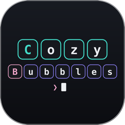

A minimal YouTube Music and YouTube player for the Mac, forked from Kaset.
- Floating glass sidebar and player bar
- YouTube with Shorts, captions and a floating mini player
- Themes, adjustable blur and transparency, automatic updates
A tiny Spotlight-style launcher: press a hotkey, type a command, and things happen.
- Commands for dark mode, sleep, lock, volume and more
- Web search with your engine of choice
- Three themes, no network access
py
PyMC
Paper plugin · Java, Python
Commands and events for a Minecraft Paper server, written in real Python instead of Skript.
- Triggers like
/gift {player} {item} in a few lines
- Events, hot reload and exact line numbers for script errors
- Works with the server's Python or GraalPy
A minimal, private browser with an Arc-style sidebar, tracker blocking and Safari Web Extensions.

CozyBubbles
Claude Code plugin
Puts the messages in Claude Code into rounded, colored bubbles with foldable details.
EFI
Builds a Hackintosh EFI for Intel laptops from a hardware report, with OpenCore, kexts and a report explaining every choice.
Arch
Archittos Install
Bash script
An unofficial install script for a clean Arch Linux setup.